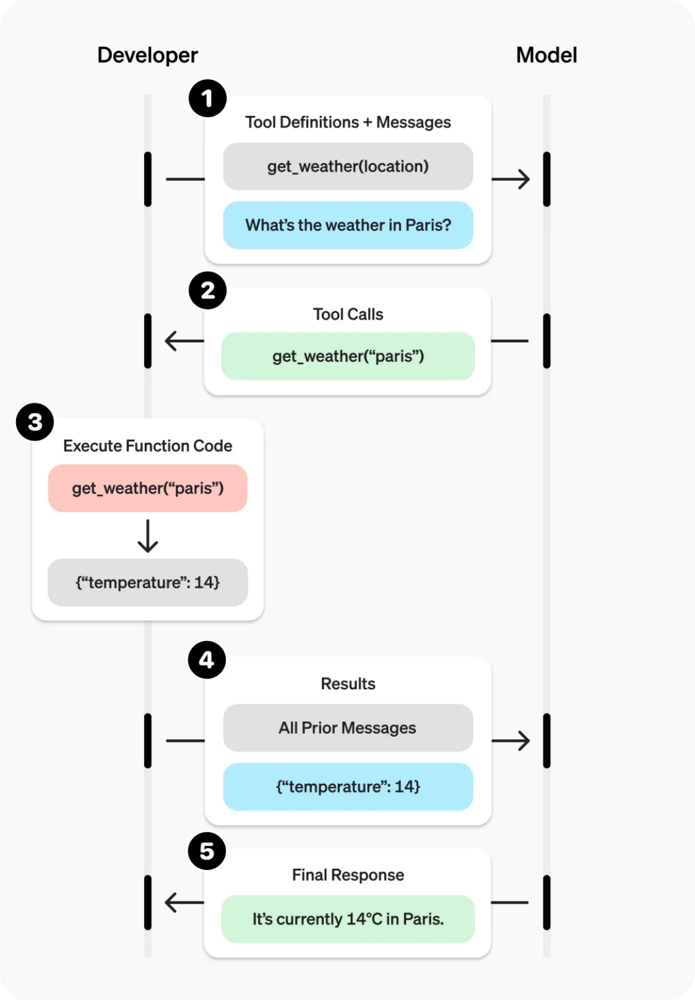

Function Calling
在 Tool Calling 机制中，大模型需要具备一个关键能力：能够以结构化的方式调用函数或工具。 Function Calling（函数调用）正是为了解决这一问题而提出的一种标准化技术，它允许语言模型在生 成文本的同时，输出结构化的函数调用指令，从而驱动系统执行具体任务。
简单来说，Function Calling 是 Tool Calling 的一种实现形式。 如果说 Tool 描述的是“系统中有哪些能力”，那么 Function Calling 解决的问题就是： 当模型需要使用某个能力时，如何以结构化方式发起调用。 通过 Function Calling，大模型可以生成标准化的 JSON 调用格式，系统接收到该调用后即可执行对应 函数，并将结果返回给模型继续推理。

一个典型的 Function Calling 流程如下：
1 User Input 2 ↓ 3 LLM Reasoning 4 ↓ 5 Function Selection
6 ↓ 7 Generate Function Arguments 8 ↓ 9 Function Execution 10 ↓ 11 Return Result to LLM 12 ↓ 13 Final Response
在这个过程中，模型不仅需要判断是否需要调用函数，还需要自动生成符合 Schema 的参数结构。
OpenAI Function Calling
目前主流的大模型平台中，最早系统化提出 Function Calling 的是 OpenAI。 在其 API 设计中，开发者可以向模型提供一组 函数定义（Function Schema），模型在推理时可以自 动决定是否调用这些函数。
函数定义通常包含以下几个关键部分：
1. 函数名称（name）
函数名称用于标识工具，例如：
1get_weather
search_web
query_order
名称需要具有明确语义，以便模型理解函数用途。
2. 函数描述（description）
函数描述用于告诉模型：
-
该函数的作用
-
什么时候应该调用
• 返回什么类型的数据
例如：
Get the weather information of a city.
Use this function when the user asks about weather.
- 参数定义（parameters）
参数通常使用 JSON Schema 描述，例如：
1 { 2 "type": "object", 3 "properties": { 4 "city": { 5 "type": "string", 6 "description": "Name of the city" 7 } 8 }, 9 "required": ["city"] 10 }

当用户输入：
1 上海现在天气怎么样？
模型可能会生成如下函数调用：
1 { 2 "name": "get_weather", 3 "arguments": { 4 "city": "Shanghai" 5 } 6 } 系统随后执行该函数，并返回天气数据。 随后模型会基于返回结果生成最终回答，例如：
1 上海当前气温为 18°C ，天气多云。
这种机制使得模型可以在推理过程中动态调用系统能力，而不是仅依赖训练数据中的知识。
Function Calling 与 Prompt 的关系
在没有 Function Calling 的情况下，开发者通常依赖 Prompt Engineering 让模型“模拟调用函数”。 例如通过 Prompt 让模型输出如下结构：
1Action: get_weather
2Input: Beijing
然后由系统解析该文本并执行函数。
这种方式存在几个问题：
-
输出格式不稳定
-
参数结构容易错误
• 难以保证 JSON 格式正确
Function Calling 则通过 Schema 约束，让模型输出严格结构化的调用信息，从而显著提高系统稳定 性。
Tool Invocation
当模型生成函数调用请求后，系统需要完成实际执行，这个过程通常称为 Tool Invocation（工具调用
执行）。
完整过程通常包含以下步骤：
- 解析函数调用
系统解析模型返回的 JSON，获取：
-
函数名称
-
参数结构
例如：
1function: get_weather
2arguments: { city: "Beijing" }
2. 匹配函数
系统根据函数名称，在 Tool Registry 中查找对应工具。
- 执行函数
调用实际代码或 API，例如：
1weather_service.get_weather(city="Beijing")
4. 返回执行结果
函数执行结果返回给模型，例如：
- 1
{
"temperature": "20°C",
"condition": "Sunny"
4}
- 模型继续推理
模型接收结果后，继续生成自然语言回答。
Function Calling 在 Agent 系统中的意义
Function Calling 是构建 AI Agent 的关键能力之一，其价值主要体现在三个方面。 首先，它使大模型能够与真实系统交互。 通过函数调用机制，模型可以访问数据库、调用 API、执行代码，从而完成复杂任务。
其次，它提供了结构化的执行方式。 由于所有函数都通过 Schema 描述，因此调用过程是可控、可验证的，这对于生产级系统尤为重要。 最后，它使得 Agent 系统具备自动化任务执行能力。 模型不仅能够理解用户需求，还能够自动决定使用哪些工具，并组合完成任务。 例如在一个智能客服 Agent 中，模型可能会依次调用：
1 query_order → check_logistics → send_message
通过多次函数调用，Agent 可以完成完整业务流程。
Function Calling 的演进
-
随着 AI Agent 技术的发展，Function Calling 正在逐步扩展为更通用的工具调用体系。例如： • Tool Calling：统一工具调用接口
-
• Agent Tool Use：多步工具推理
-
• Tool Planning：工具组合规划
-
• MCP（Model Context Protocol）：统一工具与资源访问协议
-
在下一节中，我们将进一步介绍 MCP（Model Context Protocol），以及它如何为 Agent 系统提供 统一的工具和资源访问标准。